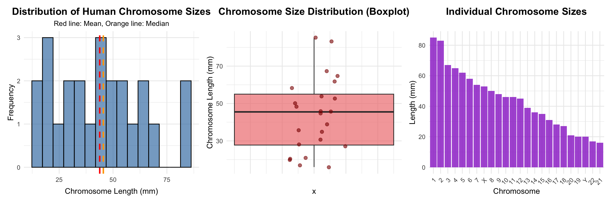
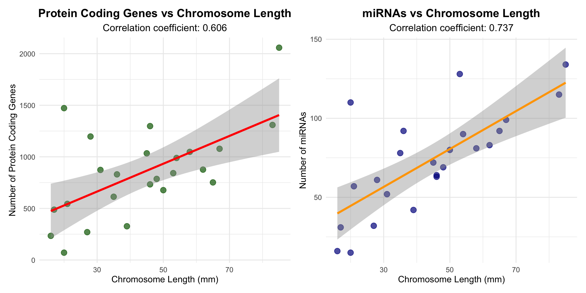
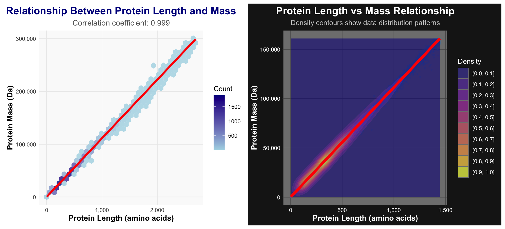

library(ggpubr)
library(scales)
library(patchwork)
library(tidyverse)
library(tidybiology)1 Install the Tidybiology package, which includes the data ‘chromosome’ and ‘proteins’, devtools::install_github(“hirscheylab/tidybiology”)
1.1 a. Extract summary statistics (mean, median and maximum) for the following variables from the ‘chromosome’ data: variations, protein coding genes, and miRNAs. Utilize the tidyverse functions to make this as simply as possible.
data("chromosome")
data("proteins")
cat("\n=== CHROMOSOME DATA SUMMARY STATISTICS ===\n")
=== CHROMOSOME DATA SUMMARY STATISTICS ===# Extract summary statistics using tidyverse functions
chromosome_summary <- chromosome %>%
summarise(
# Variations statistics
variations_mean = mean(variations, na.rm = TRUE),
variations_median = median(variations, na.rm = TRUE),
variations_max = max(variations, na.rm = TRUE),
# Protein coding genes statistics
protein_codinggenes_mean = mean(protein_codinggenes, na.rm = TRUE),
protein_codinggenes_median = median(protein_codinggenes, na.rm = TRUE),
protein_codinggenes_max = max(protein_codinggenes, na.rm = TRUE),
# miRNAs statistics
miRNAs_mean = mean(mi_rna, na.rm = TRUE),
miRNAs_median = median(mi_rna, na.rm = TRUE),
miRNAs_max = max(mi_rna, na.rm = TRUE)
)
# Display results in a more readable format
summary_long <- chromosome_summary %>%
pivot_longer(
cols = everything(),
names_to = c("variable", "statistic"),
names_sep = "_(?=[^_]+$)", # Split on the last underscore
values_to = "value"
) %>%
pivot_wider(
names_from = statistic,
values_from = value
) %>%
mutate(
variable = case_when(
variable == "variations" ~ "Variations",
variable == "protein_codinggenes" ~ "Protein Coding Genes",
variable == "miRNAs" ~ "miRNAs"
),
across(c(mean, median, max), ~round(.x, 2))
)
cat("Summary Statistics Table:\n")Summary Statistics Table:print(summary_long)# A tibble: 3 × 4
variable mean median max
<chr> <dbl> <dbl> <dbl>
1 Variations 6484572. 6172346 12945965
2 Protein Coding Genes 850. 836 2058
3 miRNAs 73.2 75 1341.2 b. How does the chromosome size distribute? Plot a graph that helps to visualize this by using ggplot2 package functions.
cat("\n=== CHROMOSOME SIZE DISTRIBUTION ===\n")
=== CHROMOSOME SIZE DISTRIBUTION ===cat("Available columns in chromosome dataset:\n")Available columns in chromosome dataset:print(names(chromosome)) [1] "id" "length_mm" "basepairs"
[4] "variations" "protein_codinggenes" "pseudo_genes"
[7] "totallongnc_rna" "totalsmallnc_rna" "mi_rna"
[10] "r_rna" "sn_rna" "sno_rna"
[13] "miscnc_rna" "centromereposition_mbp"chr_size_stats <- chromosome %>%
summarise(
n = n(),
mean_length = mean(length_mm, na.rm = TRUE),
median_length = median(length_mm, na.rm = TRUE),
sd_length = sd(length_mm, na.rm = TRUE),
min_length = min(length_mm, na.rm = TRUE),
max_length = max(length_mm, na.rm = TRUE)
)
cat("Chromosome size statistics (in mm):\n")Chromosome size statistics (in mm):print(chr_size_stats)# A tibble: 1 × 6
n mean_length median_length sd_length min_length max_length
<int> <dbl> <dbl> <dbl> <dbl> <dbl>
1 24 43.8 45.5 19.8 16 85p1 <- ggplot(chromosome, aes(x = length_mm)) +
geom_histogram(bins = 15, fill = "steelblue", alpha = 0.7, color = "black") +
geom_vline(aes(xintercept = mean(length_mm)),
color = "red", linetype = "dashed", size = 1) +
geom_vline(aes(xintercept = median(length_mm)),
color = "orange", linetype = "dashed", size = 1) +
labs(title = "Distribution of Human Chromosome Sizes",
x = "Chromosome Length (mm)",
y = "Frequency",
subtitle = "Red line: Mean, Orange line: Median") +
theme_minimal() +
theme(plot.title = element_text(hjust = 0.5, size = 14, face = "bold"),
plot.subtitle = element_text(hjust = 0.5, size = 10))
p2 <- ggplot(chromosome, aes(y = length_mm)) +
geom_boxplot(fill = "lightcoral", alpha = 0.7, width = 0.5) +
geom_jitter(aes(x = 0), width = 0.1, alpha = 0.6, size = 2, color = "darkred") +
labs(title = "Chromosome Size Distribution (Boxplot)",
y = "Chromosome Length (mm)") +
theme_minimal() +
theme(axis.text.x = element_blank(),
axis.ticks.x = element_blank(),
plot.title = element_text(hjust = 0.5, size = 14, face = "bold"))
p3 <- chromosome %>%
arrange(desc(length_mm)) %>%
mutate(id = factor(id, levels = id)) %>%
ggplot(aes(x = id, y = length_mm)) +
geom_col(fill = "darkorchid", alpha = 0.8) +
labs(title = "Individual Chromosome Sizes",
x = "Chromosome",
y = "Length (mm)") +
theme_minimal() +
theme(axis.text.x = element_text(angle = 45, hjust = 1),
plot.title = element_text(hjust = 0.5, size = 14, face = "bold"))
wrap_plots(p1, p2, p3, nrow = 1)
1.3 c. Does the number of protein coding genes or miRNAs correlate with the length of the chromosome? Make two separate plots to visualize these relationships.
cat("\n=== CORRELATION ANALYSIS ===\n")
=== CORRELATION ANALYSIS ===cor_protein_genes <- cor(chromosome$length_mm, chromosome$protein_codinggenes, use = "complete.obs")
cor_mirnas <- cor(chromosome$length_mm, chromosome$mi_rna, use = "complete.obs")
cat("Correlation between chromosome length and protein coding genes:", round(cor_protein_genes, 3), "\n")Correlation between chromosome length and protein coding genes: 0.606 cat("Correlation between chromosome length and miRNAs:", round(cor_mirnas, 3), "\n")Correlation between chromosome length and miRNAs: 0.737 p4 <- ggplot(chromosome, aes(x = length_mm, y = protein_codinggenes)) +
geom_point(size = 3, alpha = 0.7, color = "darkgreen") +
geom_smooth(method = "lm", se = TRUE, color = "red", linewidth = 1.2) +
labs(title = "Protein Coding Genes vs Chromosome Length",
x = "Chromosome Length (mm)",
y = "Number of Protein Coding Genes",
subtitle = paste("Correlation coefficient:", round(cor_protein_genes, 3))) +
theme_minimal() +
theme(plot.title = element_text(hjust = 0.5, size = 14, face = "bold"),
plot.subtitle = element_text(hjust = 0.5, size = 12))
p5 <- ggplot(chromosome, aes(x = length_mm, y = mi_rna)) +
geom_point(size = 3, alpha = 0.7, color = "darkblue") +
geom_smooth(method = "lm", se = TRUE, color = "orange", linewidth = 1.2) +
labs(title = "miRNAs vs Chromosome Length",
x = "Chromosome Length (mm)",
y = "Number of miRNAs",
subtitle = paste("Correlation coefficient:", round(cor_mirnas, 3))) +
theme_minimal() +
theme(plot.title = element_text(hjust = 0.5, size = 14, face = "bold"),
plot.subtitle = element_text(hjust = 0.5, size = 12))
wrap_plots(p4, p5, nrow = 1)
1.4 d. Calculate the same summary statistics for the ‘proteins’ data variables length and mass. Create a meaningful visualization of the relationship between these two variables by utilizing the ggplot2 package functions.
cat("\n=== PROTEINS DATA ANALYSIS ===\n")
=== PROTEINS DATA ANALYSIS ===proteins_summary <- proteins %>%
summarise(
across(c(length, mass),
list(mean = ~mean(.x, na.rm = TRUE),
median = ~median(.x, na.rm = TRUE),
max = ~max(.x, na.rm = TRUE)),
.names = "{.col}_{.fn}")
) %>%
pivot_longer(
cols = everything(),
names_to = c("variable", "statistic"),
names_sep = "_",
values_to = "value"
) %>%
pivot_wider(
names_from = statistic,
values_from = value
) %>%
mutate(
variable = case_when(
variable == "length" ~ "Protein Length",
variable == "mass" ~ "Protein Mass"
),
across(c(mean, median, max), ~round(.x, 2))
)
cat("Protein Summary Statistics:\n")Protein Summary Statistics:print(proteins_summary)# A tibble: 2 × 4
variable mean median max
<chr> <dbl> <dbl> <dbl>
1 Protein Length 557. 414 34350
2 Protein Mass 62061. 46140. 3816030cor_length_mass <- cor(proteins$length, proteins$mass, use = "complete.obs")
cat("\nCorrelation between protein length and mass:", round(cor_length_mass, 3), "\n")
Correlation between protein length and mass: 0.999 p6 <- proteins %>%
filter(!is.na(length), !is.na(mass)) %>%
filter(length < quantile(length, 0.99, na.rm = TRUE),
mass < quantile(mass, 0.99, na.rm = TRUE)) %>%
ggplot(aes(x = length, y = mass)) +
geom_hex(alpha = 0.8, bins = 30) +
geom_smooth(method = "lm", se = TRUE, color = "red", linewidth = 1.5) +
scale_fill_gradient(low = "lightblue", high = "darkblue", name = "Count") +
labs(title = "Relationship Between Protein Length and Mass",
x = "Protein Length (amino acids)",
y = "Protein Mass (Da)",
subtitle = paste("Correlation coefficient:", round(cor_length_mass, 3))) +
theme_minimal() +
theme(
plot.title = element_text(hjust = 0.5, size = 16, face = "bold", color = "darkblue"),
plot.subtitle = element_text(hjust = 0.5, size = 12, color = "gray40"),
axis.title = element_text(size = 12, face = "bold"),
legend.position = "right",
panel.grid.minor = element_blank(),
panel.background = element_rect(fill = "gray98", color = NA),
plot.background = element_rect(fill = "white", color = NA)
) +
scale_x_continuous(labels = comma_format()) +
scale_y_continuous(labels = comma_format())
p7 <- proteins %>%
filter(!is.na(length), !is.na(mass)) %>%
filter(length < quantile(length, 0.95, na.rm = TRUE),
mass < quantile(mass, 0.95, na.rm = TRUE)) %>%
ggplot(aes(x = length, y = mass)) +
geom_point(alpha = 0.3, size = 0.8, color = "steelblue") +
geom_density_2d_filled(alpha = 0.6, contour_var = "ndensity") +
geom_smooth(method = "lm", se = FALSE, color = "red", linewidth = 2) +
scale_fill_viridis_d(name = "Density", option = "plasma") +
labs(title = "Protein Length vs Mass Relationship",
x = "Protein Length (amino acids)",
y = "Protein Mass (Da)",
subtitle = "Density contours show data distribution patterns") +
theme_dark() +
theme(
plot.title = element_text(hjust = 0.5, size = 16, face = "bold", color = "white"),
plot.subtitle = element_text(hjust = 0.5, size = 11, color = "gray80"),
axis.title = element_text(size = 12, face = "bold", color = "white"),
axis.text = element_text(color = "white"),
legend.title = element_text(color = "white"),
legend.text = element_text(color = "white"),
panel.grid.major = element_line(color = "gray30", size = 0.3),
panel.grid.minor = element_blank(),
legend.background = element_rect(fill = "gray10", color = NA),
plot.background = element_rect(fill = "gray10", color = NA)
) +
scale_x_continuous(labels = comma_format()) +
scale_y_continuous(labels = comma_format())
wrap_plots(p6, p7, nrow = 1)
2 Date & Session
date()
sessionInfo()
## [1] "Thu Sep 25 11:42:29 2025"
## R version 4.3.1 (2023-06-16)
## Platform: x86_64-apple-darwin13.4.0 (64-bit)
## Running under: macOS Big Sur ... 10.16
##
## Matrix products: default
## BLAS/LAPACK: /Users/ninghe/miniconda3/envs/sr4/lib/libopenblasp-r0.3.27.dylib; LAPACK version 3.12.0
##
## locale:
## [1] en_US.UTF-8/en_US.UTF-8/en_US.UTF-8/C/en_US.UTF-8/en_US.UTF-8
##
## time zone: Europe/Stockholm
## tzcode source: system (macOS)
##
## attached base packages:
## [1] stats graphics grDevices utils datasets methods base
##
## other attached packages:
## [1] tidybiology_0.1.0 lubridate_1.9.3 forcats_1.0.0 stringr_1.5.1
## [5] dplyr_1.1.4 purrr_1.0.2 readr_2.1.5 tidyr_1.3.1
## [9] tibble_3.2.1 tidyverse_2.0.0 patchwork_1.3.0 scales_1.3.0
## [13] ggpubr_0.6.0 ggplot2_3.5.1
##
## loaded via a namespace (and not attached):
## [1] utf8_1.2.4 generics_0.1.3 rstatix_0.7.2 lattice_0.22-6
## [5] stringi_1.8.4 hms_1.1.3 digest_0.6.36 magrittr_2.0.3
## [9] evaluate_0.24.0 grid_4.3.1 timechange_0.3.0 fastmap_1.2.0
## [13] Matrix_1.6-5 jsonlite_1.8.8 backports_1.5.0 mgcv_1.9-1
## [17] fansi_1.0.6 viridisLite_0.4.2 isoband_0.2.7 abind_1.4-5
## [21] cli_3.6.3 rlang_1.1.4 splines_4.3.1 munsell_0.5.1
## [25] withr_3.0.0 yaml_2.3.9 tools_4.3.1 tzdb_0.4.0
## [29] ggsignif_0.6.4 colorspace_2.1-0 broom_1.0.6 vctrs_0.6.5
## [33] R6_2.5.1 lifecycle_1.0.4 car_3.1-2 htmlwidgets_1.6.4
## [37] MASS_7.3-60.0.1 pkgconfig_2.0.3 hexbin_1.28.3 pillar_1.9.0
## [41] gtable_0.3.5 glue_1.7.0 xfun_0.45 tidyselect_1.2.1
## [45] rstudioapi_0.16.0 knitr_1.48 farver_2.1.2 nlme_3.1-165
## [49] htmltools_0.5.8.1 labeling_0.4.3 rmarkdown_2.27 carData_3.0-5
## [53] compiler_4.3.1